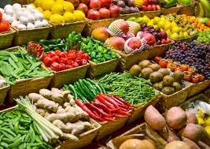
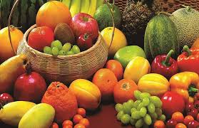

Welcome to Farm Fresh !
Fresh From the Farm
Fresh, organic, and locally sourced products delivered with care.
A fresh farm offers seasonal vegetables and fruits, ensuring freshness and nutrition.
Using organic practices, it promotes sustainability and avoids harmful chemicals.
Produce is harvested at peak ripeness for flavor and quality.
Supporting fresh farms strengthens local communities, reduces environmental impact, and connects consumers to agriculture.
We deliver fresh fruits and vegetables directly from local farms to your doorstep.

